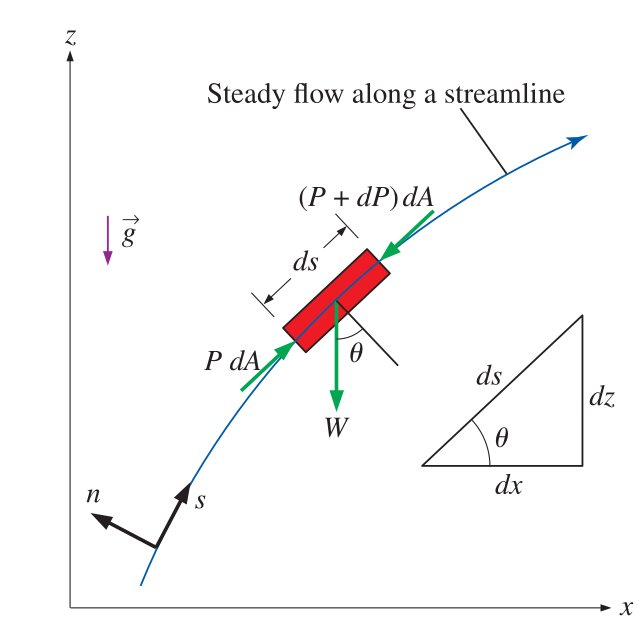

Elementary Fluid Mechanics
CE-ENGIN 357 - Fall 2024
The Bernoulli Equation
- Approximate relation between pressure, velocity and elevation
- Valid in regions of steady, incompressible flow
- Net frictional forces are negligible
- Many applications despite its simplicity
Inviscid regions of flow
Derivation of the Bernoulli equation
\[\sum F_s = m a_s\]
\[P dA - (P + dP) dA - W \sin{\theta} = m V \dfrac{dV}{ds}\]
\[m = \rho V\kern-0.8em\raise0.3ex- = \rho dA ds\] \[W = m g = \rho g \, dA \, ds\]
\[-dP \, dA - \rho g \, dA \, ds \dfrac{dz}{ds} = \rho dA \, ds \, V \dfrac{dV}{ds}\]
\[-dP - \rho g dz = \rho V dV\]
\[V dV = \dfrac{1}{2} d\left( V^2 \right)\]
\[\dfrac{dP}{\rho} + \dfrac{1}{2} d \left( V^2 \right) + g dz = 0\]
\[\boxed{\dfrac{P}{\rho} + \dfrac{V^2}{2} + gz = \text{constant}}\]
\[\boxed{\dfrac{P_1}{\rho} + \dfrac{V_1^2}{2} + gz_1 = \dfrac{P_2}{\rho} + \dfrac{V_2^2}{2} + gz_2}\]
Bernoulli as pressures
- Sum of flow, kinetic, and potential energies along a streamline is constant
- Kinetic and potential energies can be converted to flow energy
- Causes pressure change!
\[P + \rho \dfrac{V^2}{2} + \rho g z = \text{constant}\]
Each term is a pressure
- Static pressure \(P\): actual thermodynamic pressure of the fluid
- Dynamic pressure \(\frac{\rho V^2}{2}\): pressure rise when fluid in motion comes to a stop
- Hydrostatic pressure \(\rho g z\): pressure due to elevation effects (fluid weight)
Stagnation pressure is the sum of static and dynamic pressures
\[P_{\text{stag}} = P + \rho \dfrac{V^2}{2}\] \[V = \sqrt{\dfrac{2(P_{\text{stag}} - P)}{\rho}}\]
Stagnation point
Pitot tube

- Piezometer, U-tube manometer or pressure transducer
- Static pressure holes on Pitot probe
Limitations of Bernoulli equation
- Steady flow
- Negligible viscous effects
- No shaft work
- Incompressible flow
- Negligible heat transfer
- Flow along a streamline
Bernoulli as heights
\[\dfrac{P}{\rho g} + \dfrac{V^2}{2 g} + z = H = \text{constant}\]
- Pressure head \(\frac{P}{\rho g}\): height of fluid that produces static pressure
- Velocity head \(\frac{V^2}{2g}\): elevation needed to reach velocity at frictionless free fall
- Elevation head \(z\): represents potential energy of the fluid
Hydraulic and Energy grade lines
\(\text{HGL} = \frac{P}{\rho g} + z\)
\(\text{EGL} = \frac{P}{\rho g} + z + \frac{V^2}{2g}\)